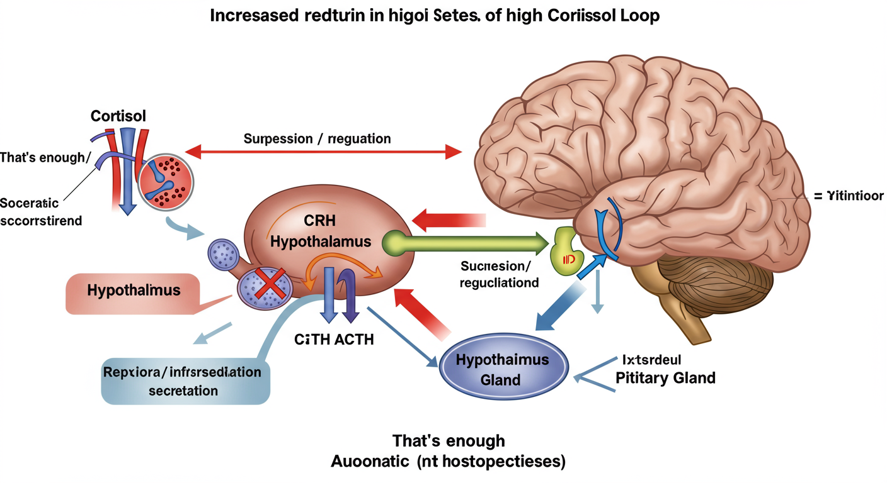

コルチゾールって何？体の超重要ホルモン！
コルチゾールは、副腎皮質という場所で作られるホルモンで、私たちの体が生きていくために欠かせない、とっても大切な物質なんだ。
ストレスを感じた時に体を守ったり、エネルギーを作り出したり、炎症やアレルギーを抑えたりと、まるで「体のスーパーヒーロー」みたいに色々な働きをしているよ。
主な働きをチェック！
- ストレス対応: 危険やプレッシャーから体を守る！
- エネルギー生成: 血糖値を上げて活動の源を供給！
- 代謝調節: 糖・タンパク質・脂質のバランスを整える！
- 免疫・炎症制御: 過剰な炎症やアレルギー反応を抑える！
- その他: 血圧維持、睡眠リズム、脳機能にも関わるよ。
生命維持に不可欠！ コルチゾールが足りなくなったり、逆に多すぎたりすると、体全体のバランスが崩れて深刻な病気になることも。だから、適度な量が保たれることがすごく大事なんだ。
コルチゾールの分泌は1日の中でも変動していて、朝方に一番多く出て、夜にかけて少なくなるというリズム（日内変動サーカディアンリズムとも呼ばれ、約24時間周期の体内リズムのこと。）があるんだ。これは睡眠や免疫機能とも深く関わっているよ。
コルチゾールができるまで：精密な体内工場
コルチゾールは、食べ物にも含まれるコレステロールを材料にして、副腎皮質の中にある「酵素」っていう職人さんたちの手で、段階的に作られていくんだ。
コルチゾールができる主なステップ
コレステロール
(材料)
P450scc
プレグネノロン
3β-HSD
プロゲステロン
CYP17A1
17α-ヒドロキシ
プロゲステロン
CYP21A2
11-デオキシ
コルチゾール
CYP11B1
コルチゾール
(完成！)
※各矢印の横は、その変化を起こす主な酵素の名前だよ。
酵素のチームワークが鍵！
これらの酵素たちは、細胞の中のミトコンドリアや小胞体といった異なる場所で働いているんだ。材料がスムーズに移動して、効率よくコルチゾールが作られるためには、このチームワークがとっても重要だよ。
もし、これらの酵素のどれかが生まれつきうまく働かないと、先天性副腎過形成症コルチゾールなどをうまく作れなくなる遺伝性の病気。 (CAH) という病気になることがあるんだ。
| ステップ |
主な材料 |
活躍する酵素 |
どこで働く？ |
何ができる？ |
| 1 |
コレステロール |
P450scc (CYP11A1) |
ミトコンドリア |
プレグネノロン |
| 2 |
プレグネノロン |
3β-HSD |
小胞体 |
プロゲステロン |
| 3 |
プロゲステロン |
CYP17A1 |
小胞体 |
17α-ヒドロキシプロゲステロン |
| 4 |
17α-ヒドロキシプロゲステロン |
CYP21A2 |
小胞体 |
11-デオキシコルチゾール |
| 5 |
11-デオキシコルチゾール |
CYP11B1 |
ミトコンドリア |
コルチゾール |
体の司令塔「HPA系」：絶妙なコントロール術
コルチゾールの量は、多すぎても少なすぎてもダメ。だから私たちの体には、コルチゾールの量をちょうど良く保つための、とっても賢い仕組みがあるんだ。それが「視床下部-下垂体-副腎系（HPA系）」だよ。
HPA系の指令の流れ
ストレスなど
(きっかけ)
脳の視床下部
CRH放出
脳の下垂体
ACTH放出
副腎皮質
コルチゾール産生・分泌
ストレスを感じると、脳の視床下部から「CRH」という指令が出て、それが下垂体に伝わると「ACTH」という指令が出る。このACTHが副腎皮質に届くと、コルチゾールが作られて分泌されるんだ。
賢いブレーキ機能：ネガティブフィードバック
コルチゾールが増えすぎないように、HPA系には「ネガティブフィードバック」というブレーキ機能があるよ。血の中のコルチゾール濃度が高くなると、それが視床下部や下垂体に伝わって、「もう十分だよ！」とCRHやACTHの分泌を抑えるんだ。これでコルチゾールの量が自動的に調節されるんだね。

慢性ストレスに注意！ 長い間ストレスを感じ続けると、このHPA系のバランスが崩れて、コルチゾールが過剰に出続けたり、逆にうまく出なくなったりすることがあるんだ。これが、うつ病や睡眠障害など、色々な心身の不調に関係すると言われているよ。
コルチゾールとステロイド薬：どう違う？
体の中で作られるコルチゾール（ヒドロコルチゾンとも言うよ）と、お薬として使われる「ステロイド薬」は、基本的な骨格は似ているけど、少し化学構造を変えることで、薬としての効果や特徴が大きく変わるんだ。
ステロイド薬はコルチゾールのパワーアップ版！
ステロイド薬は、コルチゾールの良いところ（炎症を抑える力など）を強めて、あまり嬉しくない作用（むくみなど）を弱めるように工夫されているんだ。
- プレドニゾロン: コルチゾールより炎症を抑える力が強い！
- メチルプレドニゾロン: プレドニゾロンよりさらに強力！
- デキサメタゾン、ベタメタゾン: とっても強力で、むくみなどの作用はほぼない！
これらの薬は、炎症を抑える力（糖質コルチコイド作用抗炎症作用、免疫抑制作用、糖・タンパク質・脂質代謝への作用。）と、体内の塩分バランスに関わる力（鉱質コルチコイド作用ナトリウム再吸収促進、カリウム排泄促進作用。むくみや高血圧の原因になることも。）のバランスがそれぞれ違うんだ。
ステロイド薬の強さ比べ（糖質コルチコイド作用）
主なステロイド薬の抗炎症作用の強さ (コルチゾールを1とした場合)
| 薬剤名 |
抗炎症作用 (GC) ※コルチゾール=1 |
塩分バランス作用 (MC) ※コルチゾール=1 |
作用時間 |
HPA系抑制 |
| コルチゾール |
1 |
1 |
短時間型 |
低 |
| プレドニゾロン |
4 |
0.8 |
中間型 |
中 |
| メチルプレドニゾロン |
5 |
0.5 |
中間型 |
中 |
| デキサメタゾン |
25-30 |
ほぼ0 |
長時間型 |
高 |
| ベタメタゾン |
25-40 |
ほぼ0 |
長時間型 |
高 |
※GC: 糖質コルチコイド作用、MC: 鉱質コルチコイド作用。HPA系抑制能は、内因性コルチゾール産生を抑える力のこと。
ステロイド薬はどう効くの？そのメカニズム
ステロイド薬のすごいところは、強力な抗炎症作用と免疫抑制作用。これらが色々な病気の治療に役立っているんだ。
細胞レベルでの働き：遺伝子にアプローチ！ (ゲノム作用)
ステロイド薬は細胞の中に入り込んで、グルココルチコイド受容体 (GR)ステロイド薬が結合するタンパク質。これがスイッチの役割を果たす。という特別なタンパク質にくっつく。すると、このGRが核の中に移動して、遺伝子の働きをコントロールするんだ。
ステロイド薬が細胞内へ
GR (受容体) と結合・活性化
GRが核内へ移動
炎症を抑える
タンパク質を増やす
(トランスアクティベーション)
炎症を起こす
物質を減らす
(トランスレプレッション)
この働きで、炎症を引き起こす物質（サイトカインなど）が作られるのを抑えたり、逆に炎症を鎮める物質を増やしたりするんだ。効果が出るまでには少し時間がかかるけど、持続的な効果が期待できるよ。
抗炎症作用のポイント
- 炎症の親玉NF-κB多くの炎症性物質の産生を促す転写因子。やAP-1の働きをブロック！
- 炎症を鎮めるリポコルチン-1を増やす！
- 炎症性サイトカイン（IL-1, TNF-αなど）の産生を抑える！
- 血管が腫れたり、白血球が集まってきたりするのを抑える！
免疫抑制作用のポイント
- リンパ球（T細胞、B細胞）の働きを抑え、数を減らす。
- マクロファージなどの免疫細胞の働きを抑える。
これらの作用によって、自己免疫疾患（自分の体を攻撃してしまう病気）やアレルギー疾患、臓器移植の拒絶反応などを抑えるのに役立つんだ。
速攻効果も？非ゲノム作用
ステロイド薬を大量に使った時など、数分～数十分で効果が現れることがあるんだ。これは遺伝子に働きかけるのとは別の「非ゲノム作用」と考えられていて、細胞膜に直接作用するなど、まだ研究中のメカニズムだよ。
ステロイド薬の副作用：知っておきたい注意点
ステロイド薬は多くの病気に効果的だけど、使い方によっては色々な副作用が出ることがあるんだ。特に、長期間使ったり、たくさん使ったりすると注意が必要だよ。
一番注意したいのは「HPA軸抑制」
お薬でステロイドを補給すると、体は「コルチゾールはもう十分あるぞ！」と勘違いして、自分でコルチゾールを作るのをサボってしまうんだ（HPA軸抑制）。これが長く続くと、副腎が萎縮して、自分でコルチゾールを作る力が弱くなっちゃう。
急にやめると危険！ステロイド離脱症候群
副腎の力が弱っている時に急にステロイド薬をやめると、体がコルチゾール不足になって、倦怠感、吐き気、頭痛、血圧低下など、色々な不調（ステロイド離脱症候群）が起こることがある。ひどい場合は命に関わることも。だから、お薬の減らし方・やめ方は必ずお医者さんの指示に従ってね！
長期使用で起こりやすい副作用
ステロイド薬を長く使っていると、コルチゾールが過剰な状態（医原性クッシング症候群薬が原因で起こるクッシング症候群様症状。）と同じような症状が出ることがあるよ。
| 影響する場所/カテゴリー |
主な副作用 |
どんな症状？ |
| 見た目・代謝 |
ムーンフェイス、中心性肥満、高血糖（糖尿病）、脂質異常症 |
顔が丸くなる、お腹周りに脂肪がつく、血糖値が上がる、コレステロールが上がる |
| 骨・筋肉 |
骨粗鬆症、骨頭無菌性壊死、筋力低下 |
骨がもろくなる、関節が痛む（特に股関節など）、筋肉が弱る |
| 免疫 |
易感染性（感染しやすくなる） |
風邪をひきやすい、感染症が悪化しやすい（日和見感染にも注意） |
| 精神・神経 |
不眠、イライラ、うつ、精神症状 |
眠れない、気分が高ぶる、落ち込む、幻覚や妄想が出ることも |
| 消化器 |
消化性潰瘍、膵炎 |
胃が痛む、胃もたれ、吐血や下血（まれ）、お腹の激痛 |
| 眼 |
緑内障、白内障 |
眼圧が上がる、目のかすみ、視力低下 |
| 循環器 |
高血圧、むくみ |
血圧が上がる、手足がむくむ |
| 皮膚 |
にきび、多毛、皮膚が薄くなる、皮下出血 |
にきびが増える、毛深くなる、皮膚が弱くなり傷つきやすい |
これらの副作用は、薬の量や期間、個人差によって出やすさが違うよ。気になることがあれば、すぐにお医者さんや薬剤師さんに相談しよう。
専門家からのメッセージ：賢い付き合い方
コルチゾールは私たちの体にとって不可欠なホルモン。そしてステロイド薬は、多くの病気の治療に欠かせない強力な助っ人だね。
でも、その力は「諸刃の剣」。大きな効果がある一方で、副作用のリスクも伴うことをしっかり理解しておくことが大切だよ。
ステロイド治療で大切なこと
- 医師の指示を必ず守る: 自己判断で量を変えたり、中止したりするのは絶対にダメ！
- 最小有効量・最短期間が基本: 必要以上に使わないことが大事。
- 定期的な検査と体調チェック: 副作用を早く見つけて対応するために重要。
- 不安なことは相談する: 医師や薬剤師に気軽に話してみよう。
- 正しい知識を持つ: 薬についてよく知ることが、不安を減らし、治療を続ける力になるよ。
未来のステロイド治療
科学者たちは、もっと副作用が少なくて、もっと効果的に病気を治せる新しいステロイド薬や治療法の開発を目指して、日々研究を続けているんだ。将来的には、さらに安全で効果的な治療が期待できるかもしれないね！
ステロイド薬と上手に付き合っていくためには、正しい知識を持ち、医師とよく相談しながら治療を進めることが何よりも大切だよ。